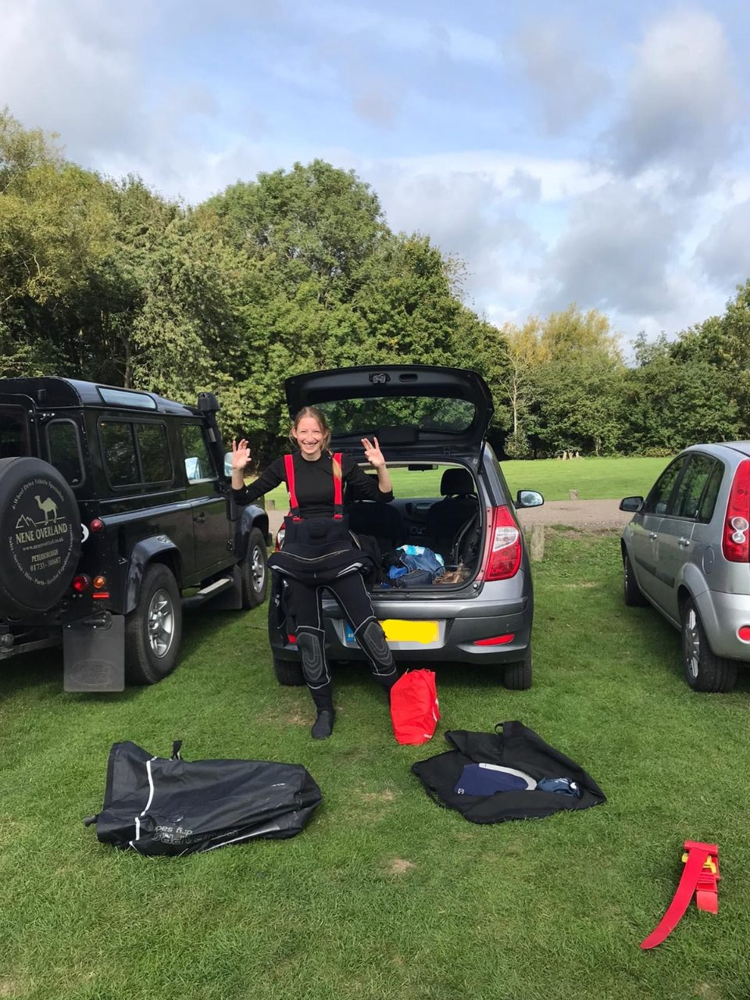
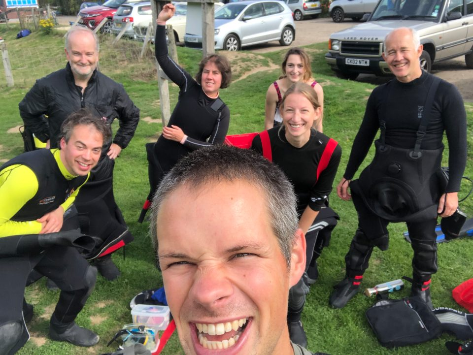
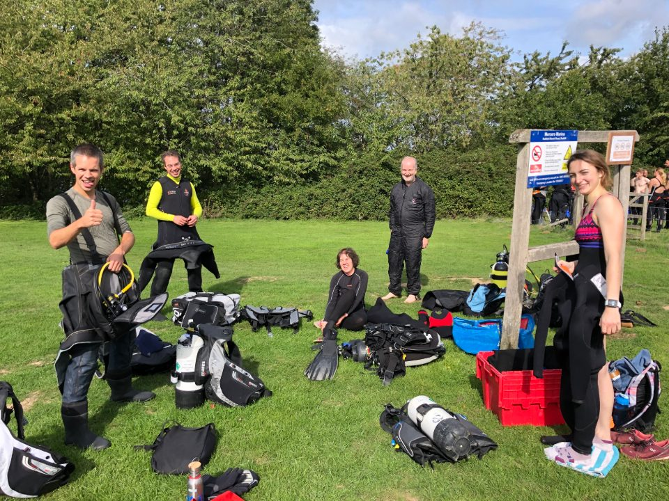
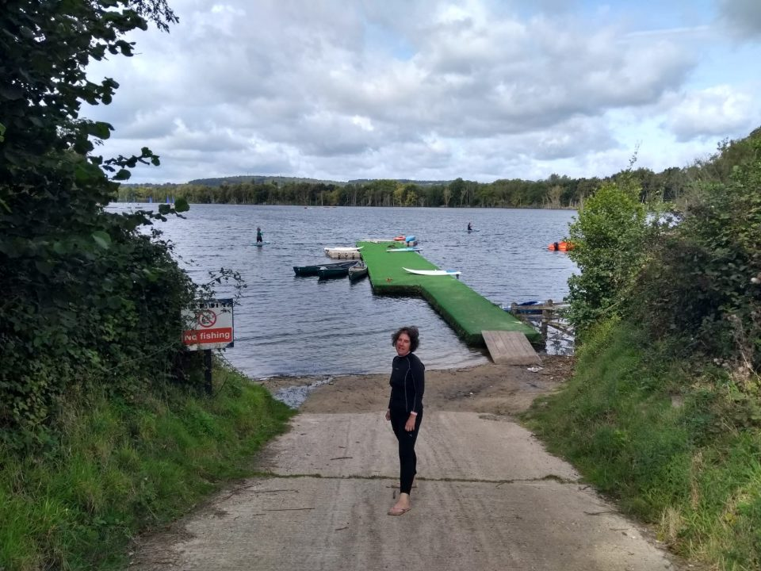

Mercers Park Diving Lake, 12th September 2020
On Saturday 12th September seven of us (Alex, Chris, Sarah B, Ollie, Julia, James B and Jess) met at Mercers Country Park Inland Diving Lake, in Redhill, Surrey.
This was a new location for all of us, and having read good things online, we were excited to see what was in store for us. A former sand quarry, now turned into a watersports and diving lake, meant that the area was a hive of activity when we arrived at 10am, with a number of divers alongside windsurfers, kayakers and SUPers. Despite the buzz, we all agreed that there was lots of space for easy kitting up and parking, and it didn’t feel too hectic. With different areas of the lake partitioned for sailors and divers, it all seemed quite organised!

The lake is surrounded by an underwater forest and is home to freshwater species such as pike, perch, roach and giant carp. Unsurprisingly, James was very enthusiastic by the fish spotting opportunities, and along with safety of course, which underwater hand signal to use for each fish became an important part of the dive briefing.

After kitting up in the sunshine we headed into the water. With an average depth of around 8m, we all enjoyed a long dive. While the visibility was maybe not quite as good as claimed on the website (we’ll blame the large group of divers who entered the water just before us), it was certainly better than we have experienced at other inland sites! We had fun exploring around the twisted tree trunks and between us, spotted a pike, rudd, a large shoal of young perch, a couple of carp and even some freshwater mussels. Perhaps Sarah had the catch of the day, finding an intact mug and old Nokia mobile (possibly intact – who knows!) on the bottom of the lake.

After, it was time for a sandwich and a socially distant catch up in the sun, before we headed home. Thanks to James for organising, and a big shout-out to new member Julia, for completing her first UK dive, and first dive with the Argonauts! It’s great to have you!

Reported by Jess